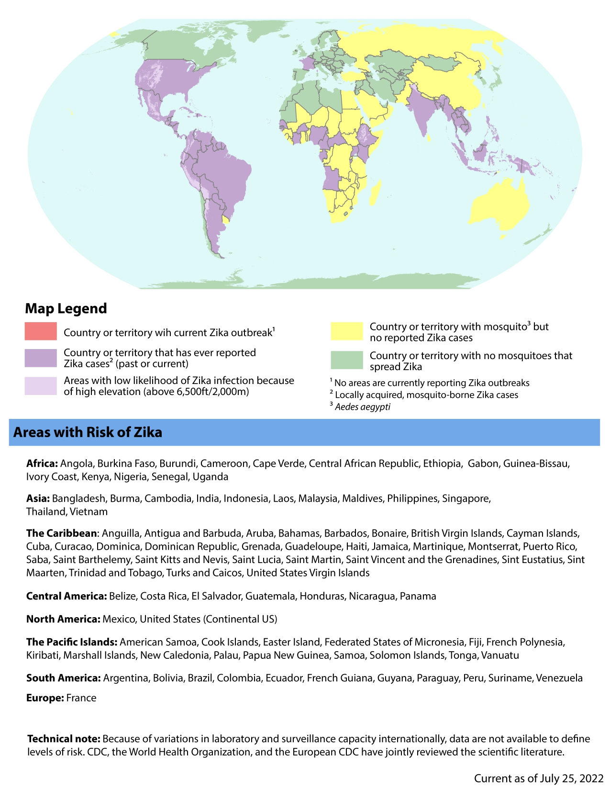

Zika
Flavivirus — Zika virus (ZIKV)
Arbovirose à transmission vectorielle et sexuelle, le plus souvent bénigne chez l'adulte mais responsable du syndrome de Zika congénital (microcéphalie) et du syndrome de Guillain-Barré. L'enjeu principal en médecine de premier recours : identifier les grossesses à risque et maîtriser les pièges diagnostiques liés à la cross-réactivité sérologique entre flavivirus.
Épidémiologie
Situation mondiale
- 92 pays et territoires ont documenté une transmission autochtone du ZIKV (OMS, mai 2024)[1]
- Pic épidémique majeur en 2015–2016 (Amériques) ; depuis 2018, transmission persistante mais à bas bruit
- Amériques 2023 : 55 813 cas dans 14 pays, dont 97 % au Brésil (54 116 cas, incidence 25/100 000)[2]
- Thaïlande 2023 : 758 cas dans 36 provinces (triplement par rapport à 2022) ; 33 cas chez des femmes enceintes ; 15 cas de microcéphalie[2]
- Bangladesh 2024 : première épidémie documentée ; 33 cas ZIKV sur 603 fébriles (5,5 %) par RT-PCR multiplex, 2 co-infections CHIKV-ZIKV ; détection initialement manquée (suspicion dengue/chikungunya)[3,39]
- L'OMS classe le ZIKV comme pathogène prioritaire (R&D Blueprint)
Contexte suisse
- Maladie à déclaration obligatoire (laboratoire → OFSP)[41]
- Nombre de cas importés faible depuis 2018 (phase post-épidémique) ; pas de transmission autochtone possible en Suisse (absence d'Ae. aegypti ; Ae. albopictus présent au Tessin mais risque considéré négligeable)
- Premier cas importé (2016) : voyageuse de retour du Brésil ; faux positif NS1 dengue puis confirmation ZIKV au laboratoire de référence OMS — illustre le piège de la cross-réactivité flavivirus[29]
- Recommandations gynécologiques suisses : Expertenbrief N° 70 SGGG (Aebi-Popp K et al.) — conseil pré-voyage, dépistage échographique, suivi de grossesse[40]
⚠ Phase post-épidémique ≠ élimination
L'incidence mondiale est basse depuis 2018, mais des foyers actifs persistent (Brésil, Thaïlande, Bangladesh 2024, Inde). La surveillance diminuée, le nombre élevé d'infections asymptomatiques et les limites diagnostiques suggèrent une sous-estimation majeure de la transmission réelle. Les femmes enceintes et les couples avec projet de grossesse doivent recevoir un conseil pré-voyage même si « le Zika n'est plus dans les médias ».[1,2]
Paramètres épidémiologiques clés
| Paramètre | Estimation | IC 95 % |
|---|---|---|
| R0 (nombre de reproduction de base) | 1,12 – 7,4 | (n = 77 estimations) |
| Période d'incubation intrinsèque | 4 – 12 jours | (n = 11 estimations) |
| Proportion symptomatique | 51,2 % | 38,0 – 64,2 % |
| Proportion syndrome congénital (grossesses infectées) | 4,65 % | 3,38 – 6,67 % |
| Perte fœtale (grossesses infectées) | 2,48 % | 1,62 – 3,78 % |
Source : méta-analyse systématique, Nature Health 2026[1]
Répartition géographique

- Amériques : Brésil (foyer le plus actif en 2023), Caraïbes, Amérique centrale
- Asie du Sud-Est : Thaïlande, Singapour (30 cas en 2023), Bangladesh (émergence 2024), Inde (clusters multiples)
- Afrique : données limitées mais transmission documentée dans plusieurs pays
- Pacifique : Polynésie française (épidémie historique 2013–2014)
- Europe : pas de transmission autochtone à ce jour ; risque théorique au sud de l'Europe (présence d'Ae. albopictus)[24]
Transmission
Transmission vectorielle (principale)
- Piqûre de moustique Aedes (surtout Ae. aegypti, aussi Ae. albopictus)
- Piqûres diurnes — principalement le matin et en fin d'après-midi
- Ae. albopictus (moustique tigre) présent au Tessin mais risque de transmission locale considéré négligeable en Suisse
Transmission sexuelle
- Démontrée dans les deux sens : homme → femme, femme → homme, homme → homme[5]
- Le sperme est le fluide corporel où le virus persiste le plus longtemps : ARN ZIKV détectable jusqu'à 6 mois post-infection[6]
- 50 % des hommes symptomatiques ont de l'ARN viral dans le sperme à 2 semaines (cohorte NEJM, n = 184)[6]
- Tropisme pour les cellules souches spermatiques et les cellules de Sertoli ; inflammation de l'épididyme et de la prostate (modèle primate)[38]
| Voie de transmission sexuelle | Probabilité par acte non protégé | IC 95 % |
|---|---|---|
| Homme → homme (anal) | 1,3 % | 0,4 – 6,0 % |
| Homme → femme (vaginal/anal) | 0,4 % | 0,3 – 0,6 % |
| Femme → homme (vaginal) | 0,1 % | 0 – 0,8 % |
Source : Major CG et al. J Infect Dis 2021[37]
Autres voies de transmission
- Verticale (materno-fœtale) : responsable du syndrome de Zika congénital
- Transfusionnelle : cas documentés ; dépistage des dons de sang en zone endémique
- Allaitement : ARN viral détecté dans le lait maternel ; transmission probable mais non confirmée comme voie majeure[4]
Persistance virale dans les fluides corporels
| Fluide | Durée de détection (ARN) | Commentaire |
|---|---|---|
| Sperme | Jusqu'à 6 mois | Charges virales élevées ; durée la plus longue |
| Urines | Plusieurs semaines | Plus longtemps que le plasma ; utile pour le diagnostic |
| Plasma | < 14 jours | Virémie courte |
| Sécrétions vaginales | Rapportée, durée plus courte que le sperme | |
| Salive, sueur | Détection prolongée possible |
Source : Calvet GA et al. Sci Rep 2023, étude prospective n = 260[4]
Présentation clinique
Infection aiguë
- Asymptomatique dans ~50 % des cas (méta-analyse 2026 : proportion symptomatique estimée à 51,2 %, IC 95 % : 38,0–64,2 %)[1]
- NB : les estimations historiques de 75–80 % d'asymptomatiques provenaient des épidémies en Micronésie ; les données poolées récentes suggèrent davantage de cas symptomatiques
Présentation typique (quand symptomatique) :
- Rash maculo-papuleux prurigineux (souvent prédominant, début précoce)
- Fièvre modeste (≤ 38,5 °C, souvent absente)
- Conjonctivite non purulente (signe quasi-pathognomonique parmi les arboviroses)
- Arthralgies des petites articulations (mains, pieds)
- Myalgies, céphalées
- Durée : 2–7 jours, auto-résolutive
Distinction clinique Zika vs. dengue
| Signe | Zika | Dengue |
|---|---|---|
| Rash | Précoce, prurigineux, prédominant | Plus tardif (J3–J7), moins prurigineux |
| Fièvre | Modeste (≤ 38,5 °C) ou absente | Élevée (39–40 °C), « break-bone fever » |
| Conjonctivite | Fréquente, non purulente | Rare |
| Douleur rétro-orbitaire | Rare | Caractéristique |
| Risque hémorragique | Non | Oui (dengue sévère) |
| Risque de choc | Non | Oui (dengue sévère) |
Complications
Syndrome de Zika congénital (SZC)
Relation causale établie entre infection ZIKV pendant la grossesse et anomalies congénitales (OMS, CDC, 2016)[7]
| Paramètre | Odds Ratio | IC 95 % |
|---|---|---|
| Microcéphalie (exposition in utero) | 12,5 | 7,8 – 20,1 |
| Calcifications intracrâniennes + ventriculomégalie | 8,4 | 4,5 – 15,7 |
| Infection au 1er trimestre (risque le plus élevé) | 18,3 | 9,7 – 34,6 |
Source : Duarte & Moreli, méta-analyse mise à jour 2025[10]
Spectre du SZC (au-delà de la microcéphalie) :
- Microcéphalie sévère (avec crâne collabé)
- Anomalies cérébrales : calcifications, ventriculomégalie, hypoplasie cérébrale/cérébelleuse, anomalies du corps calleux[31,32]
- Anomalies oculaires : atrophie maculaire, anomalies du nerf optique
- Contractures (arthrogrypose)[35]
- Troubles neurodéveloppementaux : retard cognitif, langagier, moteur
- Épilepsie
⚠ Suivi à long terme indispensable
Les troubles neurodéveloppementaux sont détectés même chez des enfants sans microcéphalie apparente à la naissance (suivi jusqu'à 36 mois, étude US).[12] Un suivi pédiatrique rapproché est nécessaire pour tout enfant exposé in utero.
Syndrome de Guillain-Barré (SGB)
- Lien causal établi entre ZIKV et SGB (OMS, évidence forte)[7,8,9]
- Risque estimé : environ 2–3 cas pour 10 000 infections ZIKV[8]
- Délai d'apparition : 5–12 jours après les symptômes infectieux (médiane)[9]
| Caractéristique du SGB-Zika | Fréquence |
|---|---|
| Faiblesse des membres | 97 % |
| Aréflexie | 96 % |
| Symptômes sensitifs | 82 % |
| Paralysie faciale | 51 % |
| Paraparésie (plus fréquent que dans le SGB classique) | 24 % |
| Admission en soins intensifs | 40–50 % |
| Ventilation mécanique | ~20 % |
| Mortalité | ~2 % |
Source : Leonhard SE et al. PLoS NTD 2020[9]
- Phénotype électrophysiologique : AIDP prédominant (62 %), AMAN (16 %)
- Pas de prédominance masculine (contrairement au SGB classique) : ratio H:F ~1:1
- Pronostic : 61–66 % marchent sans aide à 6 mois ; récupération globalement favorable
Biologie
- Bilan biologique standard souvent aspécifique
- Possible thrombopénie modérée
- Leucopénie possible
- CRP généralement peu élevée (contrairement à la dengue sévère)
- Transaminases normales ou modérément élevées
Point pratique
La biologie standard ne permet pas de distinguer Zika de dengue ou chikungunya. L'orientation repose sur la clinique (conjonctivite, rash prurigineux prédominant) et la confirmation virologique (PCR).
Diagnostic
Algorithme diagnostique
Considérer le Zika en 2e intention, après exclusion de la malaria, de la dengue et des autres étiologies fébriles tropicales/cosmopolites.
| Délai depuis les symptômes | Tests recommandés | Prélèvements |
|---|---|---|
| < 7 jours | PCR (RT-PCR) | Sérum ET urines |
| 7–28 jours | Sérologie (IgM) + PCR urines | Sérum + urines |
| > 28 jours | Sérologie uniquement | Sérum |
PCR (RT-PCR)
- Gold standard en phase aiguë (< 7 jours)
- Détectable dans le sérum pendant ~5–7 jours, dans les urines plus longtemps (jusqu'à 2–3 semaines)
- Spécificité élevée (pas de réaction croisée avec les autres flavivirus)
- Toujours prélever sérum ET urines en phase aiguë (urines plus sensibles après J5)
Sérologie : le piège de la cross-réactivité
- La protéine E du ZIKV et du DENV2 partagent ~54 % d'identité en acides aminés[15]
- Les IgM anti-ZIKV cross-réagissent fréquemment avec : dengue, fièvre jaune, encéphalite japonaise, FSME, West Nile[15,16]
- Le problème est accentué chez les patients ayant eu une infection flavivirus antérieure ou un vaccin fièvre jaune/FSME/encéphalite japonaise
- Cross-réactivité DENV-ZIKV-SARS-CoV-2 également documentée[17]
| Test sérologique | Spécificité | Commentaire |
|---|---|---|
| IgM ELISA standard | Faible (cross-réactivité élevée) | Ne permet pas de distinguer ZIKV des autres flavivirus |
| PRNT (Plaque Reduction Neutralization Test) | Élevée | Gold standard sérologique ; laboratoire de référence uniquement |
| Tests basés sur NS1 (en développement) | Meilleure que IgM ELISA | En cours de validation[14] |
⚠ Piège diagnostique majeur
Un IgM anti-ZIKV positif peut être un faux positif lié à une infection dengue antérieure ou à une vaccination fièvre jaune/FSME. En cas de doute, la PCR (sérum + urines) est le test le plus fiable en phase aiguë. Pour la confirmation sérologique tardive, seul le PRNT (laboratoire de référence) peut distinguer les flavivirus.
Points pratiques pour le MG suisse
- Prescrire PCR sérum + urines si < 28 jours post-symptômes
- Sérologie seule si > 28 jours — mais interpréter avec prudence (surtout si voyages antérieurs en zone dengue, vaccination fièvre jaune ou FSME)
- Femme enceinte avec exposition possible : discussion avec un spécialiste obligatoire (infectiologue ou médecine tropicale) pour algorithme diagnostique adapté incluant échographie de référence et suivi
Traitement
Guidelines OMS 2025
Première publication de recommandations globales couvrant les 4 arboviroses à Aedes (dengue, chikungunya, Zika, fièvre jaune) dans un seul document (juillet 2025).[30]
- Pas de traitement antiviral spécifique
- Pas de vaccin disponible (mars 2026) — 16 candidats vaccins en phase 1–2 clinique ; aucun en phase 3 (incidence trop faible pour alimenter les essais)[18]
- VLA1601 (Valneva) : résultats phase 1 positifs en nov. 2025 ; séroconversion jusqu'à 85,7 %[18]
Traitement symptomatique
- Paracétamol pour la fièvre et les douleurs
- Hydratation orale
- Repos
⚠ Éviter les AINS et l'aspirine
Tant que la dengue n'est pas exclue, les AINS et l'aspirine sont contre-indiqués en raison du risque hémorragique en cas de dengue sévère.
Prévention
Protection anti-vectorielle
- Répulsifs cutanés contenant du DEET (20–50 %), de l'icaridine ou de l'IR3535
- Vêtements longs imprégnés de perméthrine
- Moustiquaire de lit (même en journée, siestes)
- Réduction des eaux stagnantes (gîtes larvaires Aedes)
- Rappel : Aedes pique principalement de jour (matin et fin d'après-midi)
Prévention de la transmission sexuelle
| Source | Homme (retour de zone à risque) | Femme (retour de zone à risque) |
|---|---|---|
| CDC (2024–2025)[19] | Préservatif ou abstinence ≥ 3 mois | Préservatif ou abstinence ≥ 2 mois |
| OMS (2020)[20] | Préservatif ou abstinence ≥ 6 mois | Préservatif ou abstinence ≥ 2 mois |
| ECTM/UZH Suisse[21] | Préservatif pendant le voyage et ≥ 2 mois après le retour | |
Synthèse pratique pour le MG suisse
- Adopter la position CDC (3 mois pour les hommes, 2 mois pour les femmes) comme compromis raisonnable
- Homme symptomatique : préférer les 3 mois post-résolution des symptômes
- Projet de grossesse : 3 mois (homme) et 2 mois (femme) avant toute tentative de conception
- Ces délais s'appliquent indépendamment de la présence de symptômes
Grossesse et voyage
- Femmes enceintes : déconseiller fortement le voyage en zone de transmission active du ZIKV[19,40]
- Couples avec projet de grossesse : conseil pré-voyage obligatoire ; envisager de reporter le voyage ou d'appliquer strictement les mesures de prévention vectorielle ET sexuelle
- Recommandations SGGG (Expertenbrief N° 70) : conseil pré-voyage, dépistage échographique, suivi de grossesse[40]
⚠ Risque tératogène
Risque de microcéphalie et d'anomalies cérébrales, oculaires et musculo-squelettiques chez le fœtus, en particulier lors d'une infection au 1er trimestre (OR 18,3). Conseil pré-conceptionnel obligatoire pour tout voyage en zone endémique.
Pièges & perles cliniques
Confusion avec la dengue
Cliniquement similaires (fièvre + rash + arthralgies après voyage tropical). La conjonctivite non purulente et le rash prurigineux prédominant orientent vers le Zika. La sérologie est cross-réactive — privilégier la PCR en phase aiguë.
Oublier la transmission sexuelle
Le virus persiste dans le sperme bien au-delà de la virémie plasmatique. Un homme asymptomatique peut transmettre le virus sexuellement. Toujours informer les hommes revenant de zone endémique des recommandations de protection sexuelle, même en l'absence de symptômes.
Femme enceinte exposée : ne pas banaliser
Toute femme enceinte ayant voyagé en zone de transmission ZIKV (ou dont le partenaire a voyagé) doit faire l'objet d'un bilan : PCR ± sérologie selon le délai + échographie de référence + suivi rapproché. Discussion avec un spécialiste recommandée.
Sérologie positive = interprétation prudente
Un IgM anti-ZIKV positif chez un patient vacciné fièvre jaune ou FSME, ou ayant voyagé en zone dengue, peut être un faux positif. Seul le PRNT (laboratoire de référence) permet la distinction.[15,16]
Perle : conjonctivite non purulente
La conjonctivite non purulente est un signe d'orientation quasi-pathognomonique vers le Zika parmi les arboviroses (rare dans la dengue et le chikungunya typiques). À rechercher systématiquement chez le voyageur fébrile avec rash.
Perle : SGB post-Zika
Le délai symptômes infectieux → symptômes neurologiques est court (~5–12 jours). Y penser devant toute faiblesse ascendante dans les semaines suivant un voyage tropical, même si les symptômes infectieux ont été mineurs.
Perle : SZC au-delà de la microcéphalie
Même les enfants sans microcéphalie à la naissance peuvent développer des troubles neurodéveloppementaux à moyen terme. Un suivi neurodéveloppemental est nécessaire pour tout enfant exposé in utero.[12]
Conduite pratique pour le médecin de premier recours
Voyageur symptomatique au retour
- Exclure la malaria en priorité (frottis + goutte épaisse / TDR)
- Exclure la dengue (NS1, PCR dengue, sérologie)
- Si < 28 jours post-symptômes : PCR ZIKV sérum + urines
- Si > 28 jours : sérologie ZIKV (IgM) — interpréter avec prudence (cross-réactivité)
- Traitement symptomatique : paracétamol, hydratation, repos. Pas d'AINS tant que la dengue n'est pas exclue
Femme enceinte exposée
- PCR ZIKV sérum + urines (quelle que soit la présence de symptômes)
- Sérologie selon le délai (> 7 jours)
- Échographie obstétricale de référence (recherche microcéphalie, calcifications, ventriculomégalie)
- Discussion obligatoire avec un spécialiste (infectiologue / médecine tropicale / gynécologue référent)
- Suivi échographique rapproché si exposition confirmée
Conseil pré-voyage
- Femmes enceintes : déconseiller fortement le voyage en zone de transmission active
- Couples avec projet de grossesse : discuter du report du voyage ou des mesures strictes de prévention
- Informer sur la protection anti-vectorielle diurne
- Informer sur la transmission sexuelle et les délais de protection post-retour
- Vérifier le site HealthyTravel.ch (ECTM) pour les recommandations actualisées par destination
Quand référer ?
- Femme enceinte avec exposition possible au ZIKV (voyage ou partenaire ayant voyagé)
- Suspicion de syndrome de Guillain-Barré post-voyage tropical (faiblesse ascendante, aréflexie)
- Diagnostic sérologique douteux nécessitant un PRNT (laboratoire de référence)
- Couple avec projet de grossesse et voyage récent en zone endémique
- Tout cas complexe nécessitant un avis spécialisé en infectiologie / médecine tropicale
Références
- McCain K, Vicco A, Morgenstern C et al. A systematic review and meta-analysis of Zika virus epidemiology. Nature Health 2026;1:355–367.
- Harrington J et al. A review of the recent epidemiology of Zika virus infection. Am J Trop Med Hyg 2025;112(5):1026–1035.
- Ferdous J et al. Zika virus outbreak — Bangladesh, September–December 2024. MMWR 2026;75(1):1–6.
- Calvet GA, Kara EO, Botto-Menezes CHA et al. Detection and persistence of Zika virus in body fluids and associated factors: a prospective cohort study. Sci Rep 2023;13:21178.
- Counotte MJ, Kim CR, Wang J et al. Sexual transmission of Zika virus and other flaviviruses: a living systematic review. PLOS Med 2018;15:e1002611.
- Mead PS, Duggal NK, Hook SA et al. Zika virus shedding in semen of symptomatic infected men. N Engl J Med 2018;378:1377–1385.
- Krauer F, Riesen M, Reveiz L et al. Zika virus infection as a cause of congenital brain abnormalities and Guillain-Barré syndrome: systematic review. PLOS Med 2017;14:e1002203.
- Mier-y-Teran-Romero L, Delorey MJ, Sejvar JJ, Johansson MA. Guillain-Barré syndrome risk among individuals infected with Zika virus: a multi-country assessment. BMC Med 2018;16:67.
- Leonhard SE, Bresani-Salvi CC et al. Guillain-Barré syndrome related to Zika virus infection: a systematic review and meta-analysis of the clinical and electrophysiological phenotype. PLoS Negl Trop Dis 2020;14:e0008264.
- Duarte TRE, Moreli ML. Beyond microcephaly: quantitative assessment of congenital outcomes following Zika virus infection during pregnancy — an updated meta-analysis. medRxiv 2025.
- Johansson MA, Mier-y-Teran-Romero L, Reefhuis J et al. Zika and the risk of microcephaly. N Engl J Med 2016;375:1–4.
- Tong VT et al. Outcomes up to age 36 months after congenital Zika virus infection — U.S. states. Pediatr Res 2023;94:1373–1379.
- Duarte TRE et al. Genetic variants underlying congenital Zika syndrome and severe microcephaly: a systematic review and meta-analysis. VirusDisease 2025;36:313–325.
- Madere FS, Andrade da Silva AV et al. Flavivirus infections and diagnostic challenges for dengue, West Nile and Zika viruses. npj Viruses 2025;3:36.
- Chan KR, Ismail AA et al. Serological cross-reactivity among common flaviviruses. Front Cell Infect Microbiol 2022;12:975398.
- Gaspar-Castillo C et al. Structural and immunological basis of cross-reactivity between dengue and Zika infections: implications in serosurveillance in endemic regions. Front Microbiol 2023;14:1107496.
- Munoz-Jordan J et al. Evaluation of serologic cross-reactivity between dengue virus and SARS-CoV-2 in patients with acute febrile illness. MMWR 2022;71(10):375–377.
- Lee HJ et al. An updated review of Zika virus vaccine development. Clin Exp Vaccine Res 2025;14:325–334. / Valneva SE. Positive results for Phase 1 trial of VLA1601. Press release, Nov 4, 2025.
- CDC. Zika virus — Recommendations for travelers and people living abroad. Updated 2025. / CDC. Zika virus — Prevention.
- WHO. Guidelines for the prevention of sexual transmission of Zika virus. Geneva: WHO; 2020.
- Zentrum für Reisemedizin UZH. Zika — Pre-travel advice. ECTM/HealthyTravel.ch.
- Public Health Agency of Canada. Zika virus: Pregnant or planning a pregnancy. Updated 2024.
- WHO. Zika epidemiology update — May 2024.
- WHO Europe. Zika virus technical report: interim risk assessment for WHO European region. 2025.
- Kurscheidt FA et al. Persistence and clinical relevance of Zika virus in the male genital tract. Nat Rev Urol 2019;16:211–230.
- de Jong HK, Grobusch MP. Zika virus: an overview update. Curr Opin HIV AIDS 2025;20(3).
- Revue Médicale Suisse. Virus Zika : mise à jour des recommandations. Rev Med Suisse 2019;649.
- Herrera TT, Cubilla-Batista I, Goodridge A, Pereira TV. Diagnostic accuracy of prenatal imaging for the diagnosis of congenital Zika syndrome: systematic review and meta-analysis. Front Med 2022;9:962765.
- Gyurech D, Schilling J, Schmidt-Chanasit J et al. False positive dengue NS1 antigen test in a traveller with an acute Zika virus infection imported into Switzerland. Swiss Med Wkly 2016;146:w14296.
- WHO. Guidelines for clinical management of arboviral diseases: dengue, chikungunya, Zika and yellow fever. Geneva: WHO; 4 July 2025.
- Vasco Aragão MF, van der Linden V, Brainer-Lima AM et al. Clinical features and neuroimaging (CT and MRI) findings in presumed Zika virus related congenital infection and microcephaly. BMJ 2016;353:i1901.
- Soares de Oliveira-Szejnfeld P, Levine D, Melo AS et al. Congenital brain abnormalities and Zika virus: what the radiologist can expect to see prenatally and postnatally. Radiology 2016;281:203–218.
- Okafor C, Kanekar S. Imaging of microcephaly. Clin Perinatol 2022;49:693–713.
- Freitas DA, Souza-Santos R, Carvalho LMA et al. Congenital Zika syndrome: a systematic review. PLoS One 2020;15:e0242367.
- Hageman G, Nihom J. Fetuses and infants with Amyoplasia congenita in congenital Zika syndrome: the evidence of a viral cause. A narrative review of 144 cases. Eur J Paediatr Neurol 2022;42:1–14.
- Tajik S, Farahani AV et al. Zika virus tropism and pathogenesis: understanding clinical impacts and transmission dynamics. Virol J 2024;21:271.
- Major CG, Paz-Bailey G, Hills SL et al. Risk estimation of sexual transmission of Zika virus — United States, 2016–2017. J Infect Dis 2021;224:1756–1764.
- Ball EE, Pesavento PA et al. Zika virus persistence in the male macaque reproductive tract. PLoS Negl Trop Dis 2022;16:e0010566.
- Mizanur R, Ayaz KF et al. Reported circulation of Zika and re-circulation of Chikungunya in Dengue-endemic Dhaka, Bangladesh in 2024. PLoS One 2026;21:e0340119.
- Aebi-Popp K, Baud D, Martinez de Tejada B et al. Zikavirus und Schwangerschaft. Expertenbrief No 70 (ersetzt Nr. 46). SGGG.
- OFSP (BAG). Zika virus.
- ECDC. Strategies and guidelines for Zika virus infection.
- Cortes N, Lira A, Prates-Syed W et al. Integrated control strategies for dengue, Zika, and Chikungunya virus infections. Front Immunol 2023;14:1281667.
- Zammarchi L, Chechi F, Spinicci M, Bartoloni A. Flaviviruses proteases. The Enzymes 2025;58:251–278.